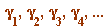

| > | ### extension of Gauss' binomial coefficient congruence.mws |
| > |
I dedicate this talk to the memory of Jon Borwein (1951-2016)
https://en.wikipedia.org/wiki/Jonathan_Borwein
_________________
Chorus, in the Prologue of Shakespeare's Henry V:
" ... jumping o'er times
Turning the accomplishment of many years
Into an hour glass : "
_________________
Title, speaker, aim/structure of talk
Procedures (anyone using this 'live' needs to exectute this section to perform independent computations)
Photos of Gauss, Karl, Beukers, Chowla-Dwork-Evans, and some web links
Before I tell you Gauss' theorem (and its extension by Chowla-Dwork-Evans, and then ourselves, Cosgrave-Dilcher) I need to remind you of certain earlier work - Fermat (two instances), Wilson, Lagrange
Fermat's two-square theorem (with the 'signed' element incorporated into its statement)
In the following section - which has several sub-sections - I have added more details than in my actual talk, and I include them now for your independent reading:
Some classic congruences (Fermat, Wilson, Lagrange, and some others ... ), and the Gauss- Wilson theorem
And now we are ready for the remarkable:
Gauss' binomial coefficient congruence, and its extension ("suggested by Beukers"), proved by Chowla-Dwork-Evans
And now the notion of a Gauss factorial (which we introduced in our first paper):
A very, very fast introduction to Gauss factorials
Cutting corners: introducing the gamma-values 
View examples of the gamma-structure of prime powers for half- and quarter-factorials, and 'exceptional' prime
How we went from one of our gamma-structure results - helped by Chowla-Dwork-Evans - to the start our new ...
And the continuation, and finalisation
And a brief return to 'exceptional' primes